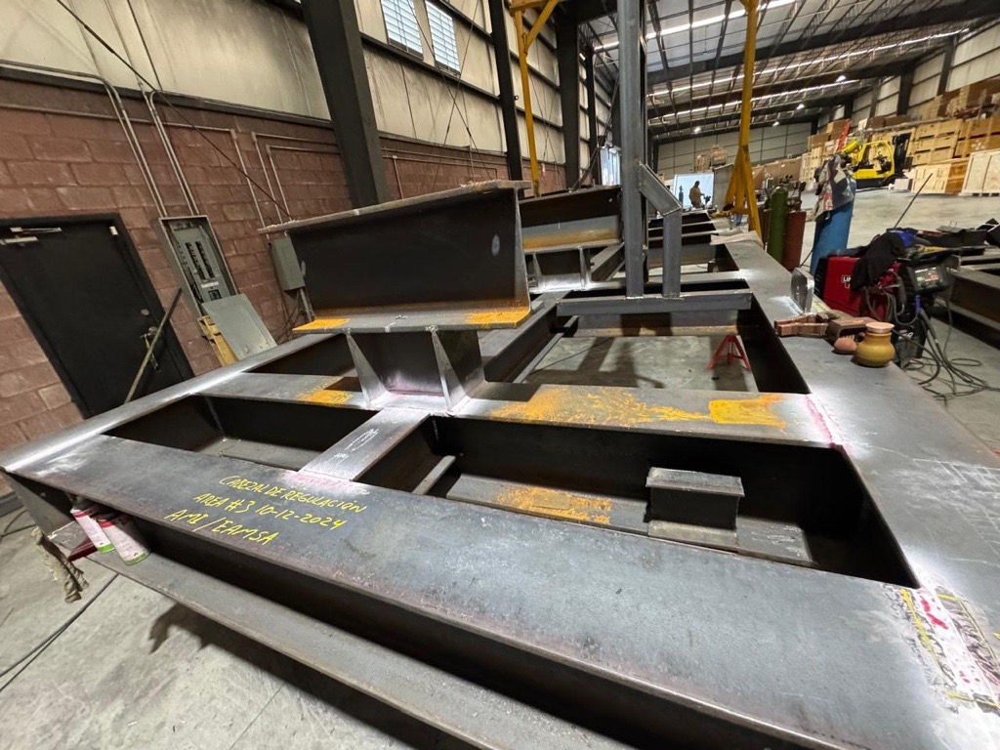
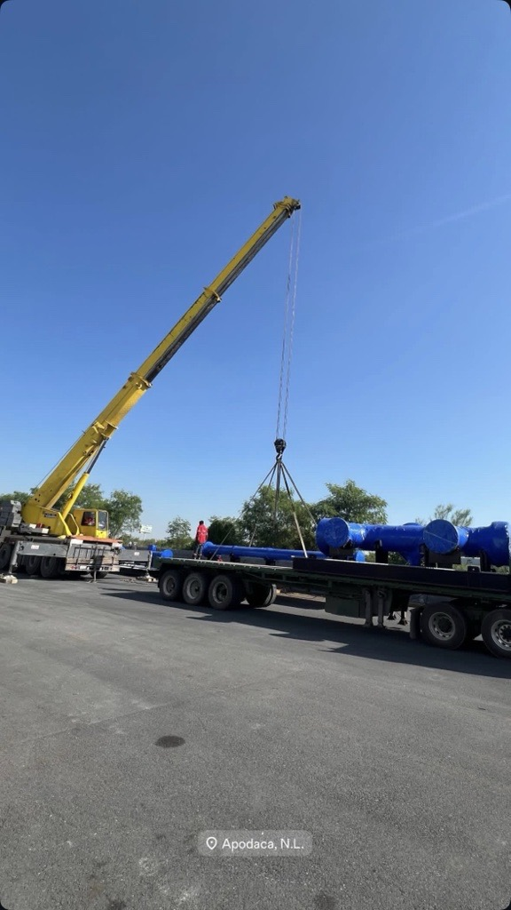
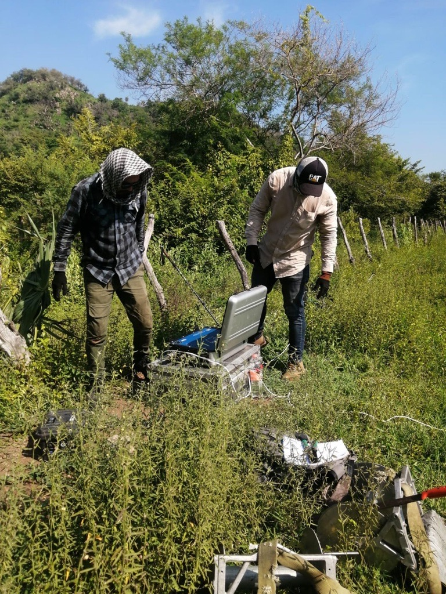

Experiencia en Campo
Supervisión técnica...




Ingeniero Mecánico | Especialidad en Diseño 3D e Integridad Mecánica
Ingeniero Mecánico con experiencia en la industria Oil & Gas y Manufactura. He participado en el desarrollo de ingeniería conceptual, básica y de detalle e ingeniería AS-BUILT para instalaciones onshore como estaciones de regulación y medición de gas natural, refinerías y terminales de almacenamiento y reparto de combustibles. Cumpliendo en todo momento con normativas nacionales e internacionales como ASME, API, NOM, AGA, ISO, NACE, etc. Además, cuento con experiencia en campo supervisando la construcción e integración de equipos estáticos y dinámicos, asegurando el cumplimiento de especificaciones técnicas, estándares de calidad y normatividad vigente.
Parte de mi experiencia como ingeniero de diseño mecánico ha sido el desarrollo de diferentes modelos 3D, a partir de software como AutoCad, Plant 3D, SolidWorks, Autodesk Inventor y Fusion 360. Además he integrado nubes de puntos para garantizar la precisión del modelado en todo momento
Supervisión técnica...
Lectura de planos y DTI de tuberías - DMIA

Manejo de escaner RTC-360 - LEICA GEOSYSTEMS
CSWA - SolidWorks
Proyectista de Sistemas Piping Industriales - FI
Selección de Bombas Industriales - FI
Estrés de Tuberías con AutoPipe - FI